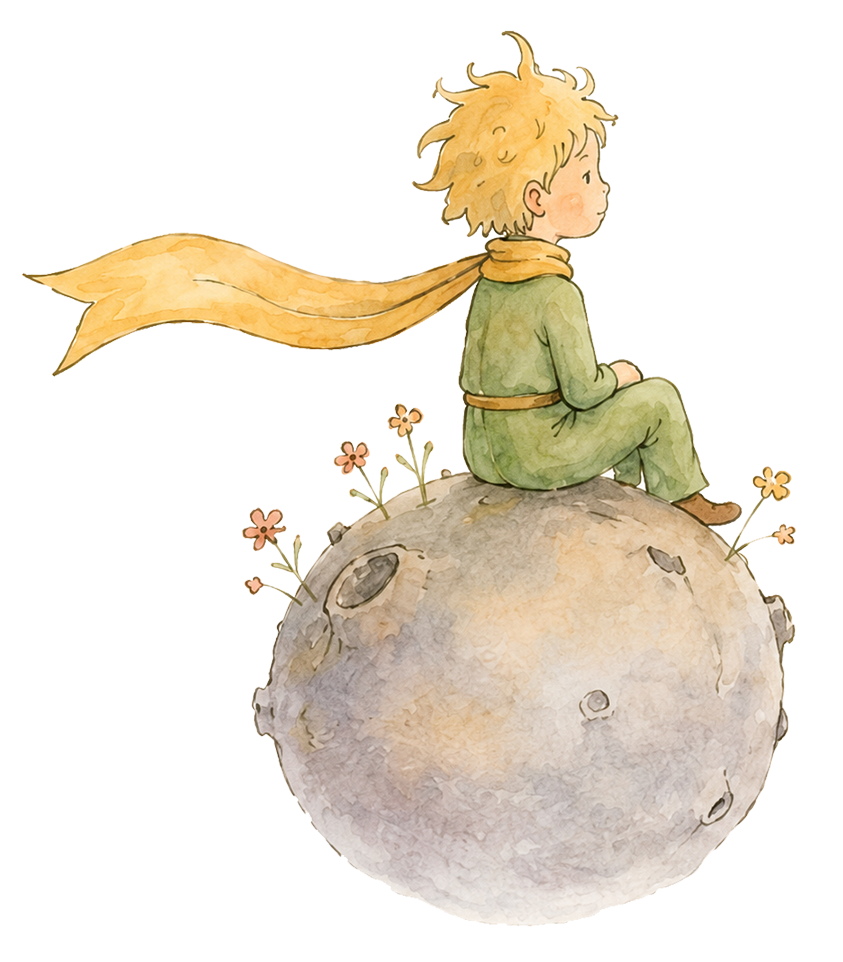
מסע לימודי בין הכוכבים
"הדברים החשובים באמת סמויים מן העין" - כך לימד אותנו השועל החכם. באתר הזה יוצאים תלמידות ותלמידי כיתות ד'-ו' למסע קריאה בעקבות ספרו הנצחי של אנטואן דה סנט-אכזופרי, פרק אחר פרק - עם תקצירים, שאלות למחשבה ופעילויות יצירתיות ורב-תחומיות שמשלבות אומנות, מדע, פילוסופיה והיסטוריה. האתר נבנה מתוך ניסיון הוראה אמיתי בכיתה, ומיועד לשימוש חופשי גם על ידי מורים אחרים.
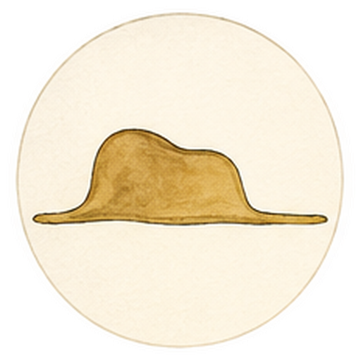
✦ נחש הבואה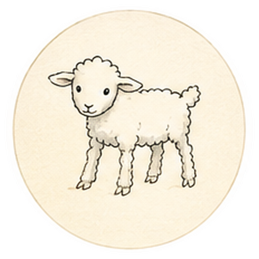
✦ המפגש בסהרה וציור הכבשה בקרוב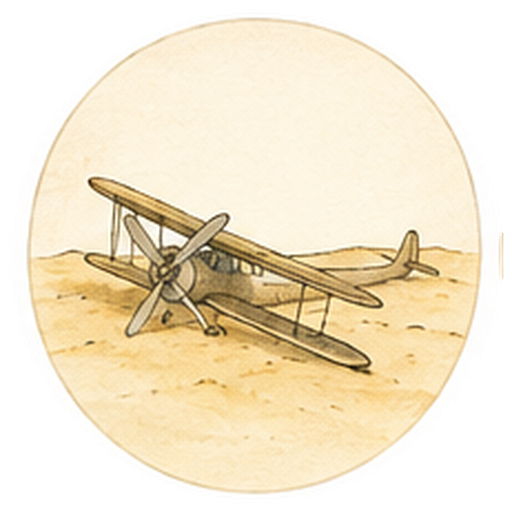
✦ הכוכב הזעיר שלו בקרוב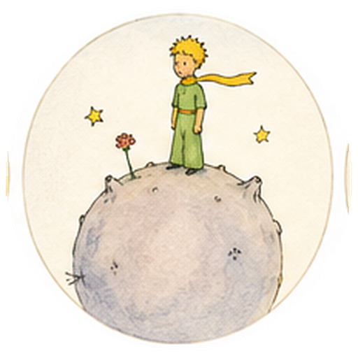
✦ האסטרונום הטורקי בקרוב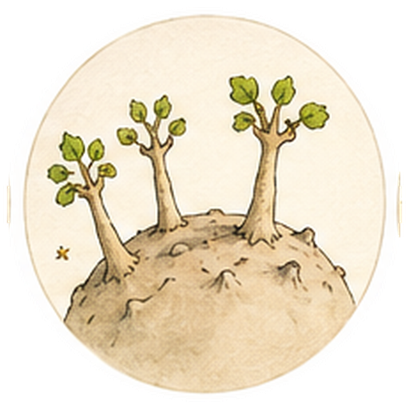
✦ עצי הבאובב בקרוב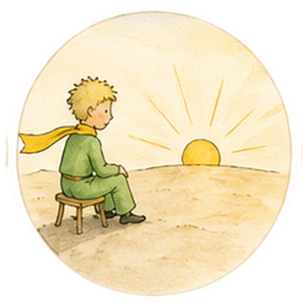
✦ ארבעים וארבע שקיעות בקרוב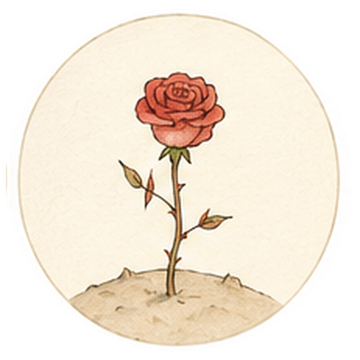
✦ קוצים ושושנים בקרוב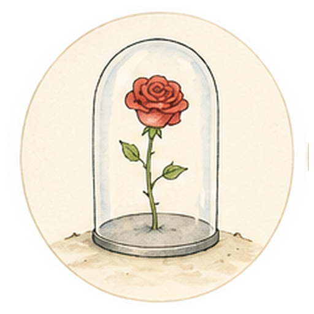
✦ השושנה הגנדרנית בקרוב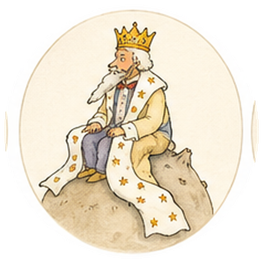
✦ המלך בקרוב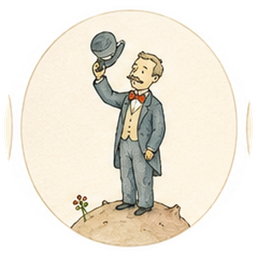
✦ השחצן בקרוב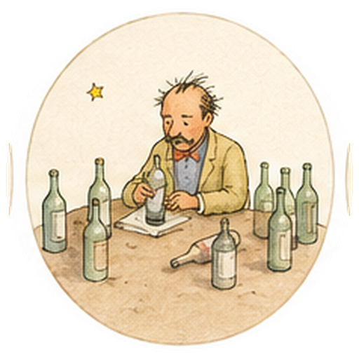
✦ השיכור בקרוב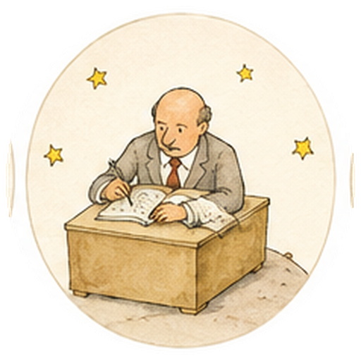
✦ איש העסקים בקרוב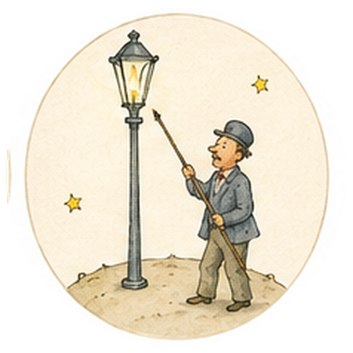
✦ מדליק הפנסים בקרוב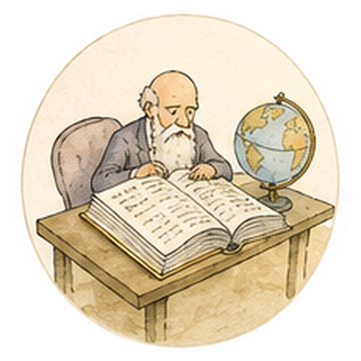
✦ הגיאוגרף בקרוב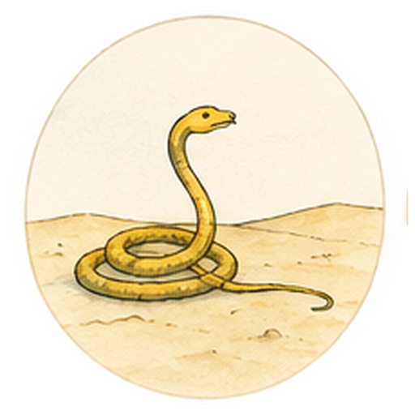
✦ הנחש בסהרה ושיח על בדידות בקרוב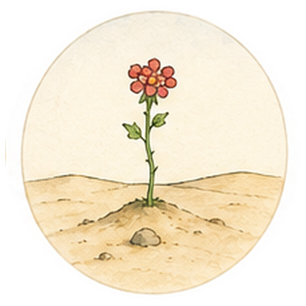
✦ הפרח בעל שלושת העלים בקרוב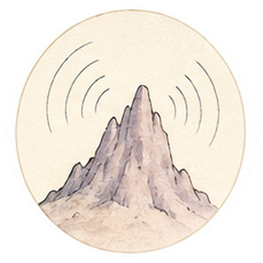
✦ ההר וההד בקרוב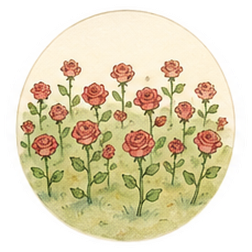
✦ גן השושנים בקרוב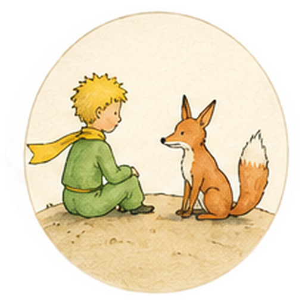
✦ השועל בקרוב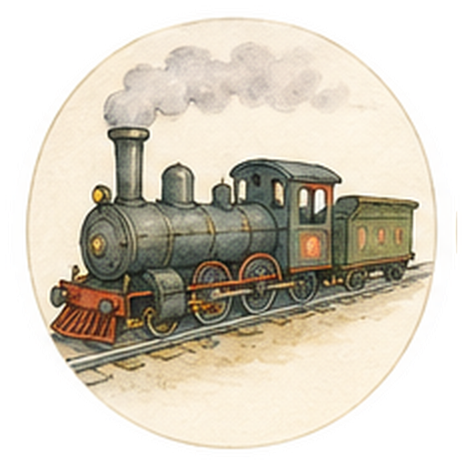
✦ פקיד הרכבת בקרוב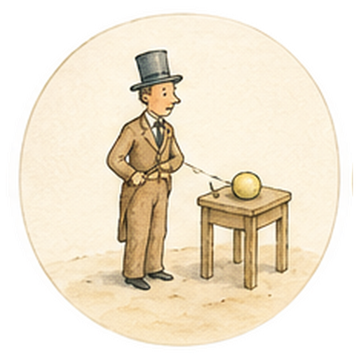
✦ הרוכל בקרוב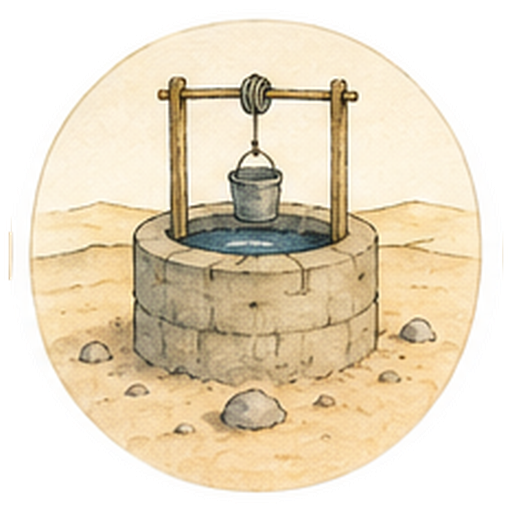
✦ הבאר בקרוב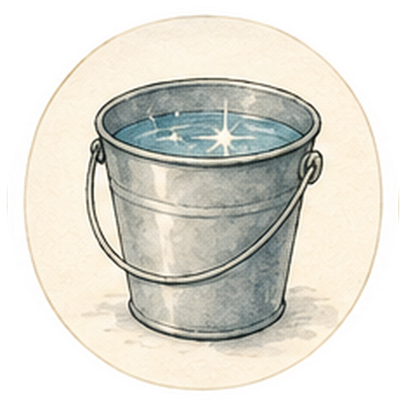
✦ דלי המים בקרוב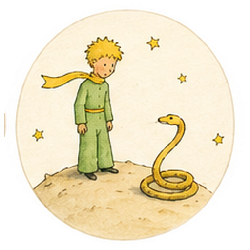
✦ הפרידה מן הנחש בקרוב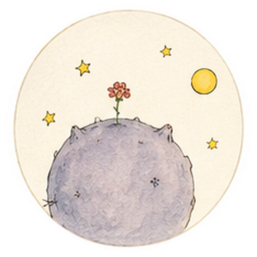
✦ מבט אל הכוכבים (אפילוג) בקרוב